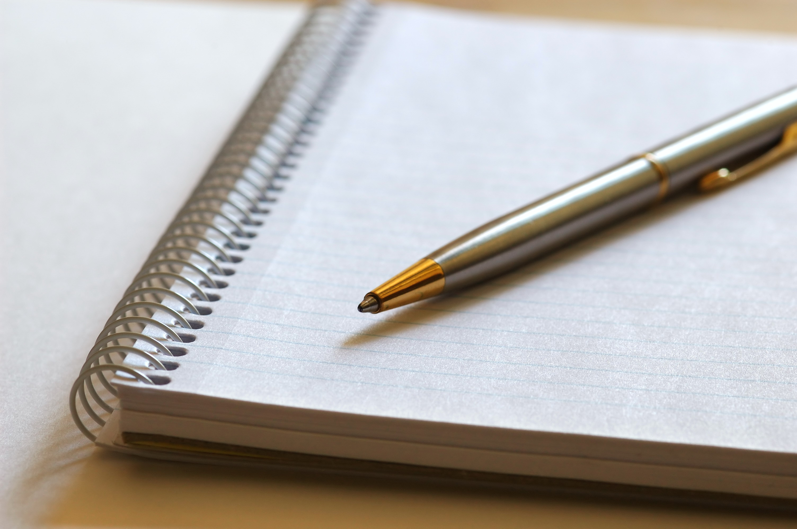

<!--
  Generated template for the HomePage page.

  See http://ionicframework.com/docs/components/#navigation for more info on
  Ionic pages and navigation.
-->
<ion-header >

  <ion-navbar color="sienna" >
    <ion-title ></ion-title>
  </ion-navbar>

</ion-header>


<ion-content padding>
  <h1>My</h1><br>
  <h1>Daily</h1><br>
  <h1>ToDoList</h1><br>

  <button ion-button (click)="move()" block  color="sienna"  id="btnn">ClickMe</button><br>

  
  
</ion-content>
